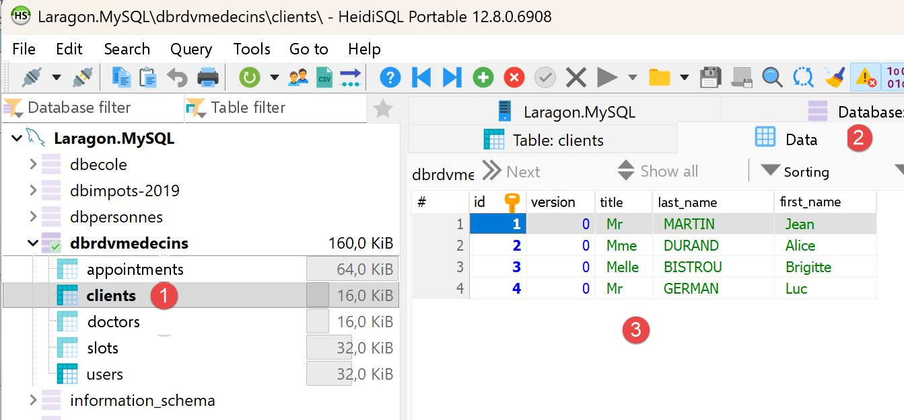

3. Capítulo 2 - Instalación del servidor [NestJS]
El cliente [Kotlin] descrito en este documento necesita un servidor al que consultar: el servidor [NestJS] de la aplicación [RdvMedecins], incluido con este documento en la carpeta [rdvmedecins-nestjs-server]. Como este documento se centra en [Kotlin], ese servidor se trata como una “caja negra”: este capítulo explica cómo instalarlo, configurarlo, crear su base de datos [MySQL], iniciarlo y probarlo, pero no examina su código. Los lectores que deseen conocer [NestJS] pueden consultar el documento “Introducción al lenguaje TypeScript y al framework NestJS” (2026).
Este capítulo es una réplica exacta del capítulo 2 del curso “Un ejemplo cliente/servidor - Flutter / NestJS (2026)”: el servidor, su base de datos y sus pruebas son exactamente los mismos. Los lectores que ya hayan instalado este servidor para el curso de Flutter pueden pasar directamente a la última sección de este capítulo, “Inicio del cliente Kotlin por primera vez”.
3.1. Instalación de Laragon
Para crear la base de datos [MySQL] que utiliza el servidor [NestJS], usaremos la herramienta Laragon. En septiembre de 2026, Laragon está disponible en la URL [Download Laragon – Fast & Modern Dev Environment ]. Laragon incluye herramientas que permiten instalar un servidor PHP y el servidor del SGBD [MySQL]:

- en [1], un servidor web Apache;
- en [2], el SGBD [MySQL];
- en [3], una herramienta de mensajería que no utilizaremos;
- [4] inicia todos los servicios (Apache, [MySQL], MailPit);
- [5] muestra la página web de la URL [http://localhost]. De forma predeterminada, esta URL corresponde a la carpeta <laragon-install>\www, donde <laragon-install> es la carpeta de instalación de Laragon;
- en [6], inicia la herramienta HeidiSQL, que permite administrar bases de datos MySQL. Usaremos esta herramienta para crear la base de datos que utiliza el servidor [RdvMedecins];
- en [7], abre una terminal en la que todos los binarios necesarios para Laragon están en el PATH;
- en [8], abre el Explorador de archivos de Windows en la carpeta asociada a la URL [http://localhost];
La carpeta de instalación de Laragon contiene los siguientes elementos:
 |
- En [1], la carpeta [bin] contiene numerosas aplicaciones:
 |
- en [1], el servidor web Apache;
- en [2], una terminal de línea de comandos;
- [3], un cliente ([git]) que permite administrar las distintas versiones de un proyecto;
- [4], un administrador de bases de datos;
- [5], un administrador de correo;
- [6], el SGBD [MySQL];
- [7], otro servidor web;
- en [8], [node.js] para ejecutar scripts JavaScript;
- [9], un editor de texto;
- [10], el intérprete de PHP;
- [11], el intérprete de [Python];
- [12], un servidor de caché;
Laragon incluye un entorno de desarrollo completo. En este curso, usaremos únicamente el SGBD [MySQL] [6] y la herramienta [heidisql] para administrarlo gráficamente;
3.2. Instalación y configuración del servidor [NestJS]
La carpeta [rdvmedecins-nestjs-server] tiene la siguiente estructura de directorios:
Cada subcarpeta de [src/] contiene su propio archivo [README.md], que resume el propósito de los archivos que contiene. El código fuente de estos archivos no se trata en este documento.
En la carpeta [rdvmedecins-nestjs-server], escriba los siguientes comandos en una terminal:
El archivo [.env] define variables de entorno:
Personalice el archivo [.env] recién creado para que coincida con su instalación de [MySQL] (nombre de usuario, contraseña, puerto). Como se agregó la autenticación, este archivo también contiene una clave llamada JWT_SECRET: el valor de ejemplo sirve para seguir este documento, pero debe reemplazarse por una cadena aleatoria propia antes de cualquier uso real.
3.3. Creación de la base de datos
La base de datos [dbrdvmedecins] refleja la estructura del documento original (2014, Spring 4 / [MySQL] 5): mismas tablas—[doctors], [clients], [slots], [appointments]—mismas claves externas, misma restricción de unicidad. La única incorporación nueva, introducida por el paso de “autenticación” de esta adaptación: la tabla [users]. Las relaciones entre estas tablas son las siguientes: un médico ([doctors]) tiene varias franjas horarias ([slots], clave externa [doctor_id]); una cita ([appointments]) vincula un día, una franja horaria (y, por lo tanto, un médico) y un cliente ([clients]); la tabla [users] es independiente de las otras cuatro: se utiliza únicamente para la autenticación.
3.3.1. [database/dbrdvmedecins.sql]

1 2 3 4 5 6 7 8 9 10 11 12 13 14 15 16 17 18 19 20 21 22 23 24 25 26 27 28 29 30 31 32 33 34 35 36 37 38 39 40 41 42 43 44 45 46 47 48 49 50 51 52 53 54 55 56 57 58 59 60 61 62 63 64 65 66 67 68 69 70 71 72 73 74 75 76 77 78 79 80 81 82 83 84 85 86 87 88 89 90 91 92 93 94 95 96 97 98 99 100 101 102 103 104 105 106 107 108 109 110 111 112 113 114 115 116 117 118 119 120 121 122 123 124 125 126 127 128 129 130 131 | |
Analicemos este código:
- Líneas 20–21: [CREATE DATABASE IF NOT EXISTS dbrdvmedecins …] seguido de [USE dbrdvmedecins]: crea la base de datos si aún no existe (con el juego de caracteres [utf8mb4], que admite todos los caracteres Unicode, incluidos los acentos) y luego la selecciona: todas las instrucciones siguientes se aplican a ella. Estas dos líneas deben ir obligatoriamente PRIMERO: si se ejecutaran después de [DROP TABLE …], fallarían porque no hay ninguna base de datos seleccionada (error [No database selected]);
- Líneas 24–28: [DROP TABLE IF EXISTS …] : el script parte de una base de datos vacía en cada ejecución, en el orden inverso de las dependencias (comenzando por
appointments, que hace referencia aslotsyclients, hastausers, a la que nadie hace referencia): [MySQL] se negaría a eliminar una tabla que todavía está referenciada por una clave externa; - Línea 58: [doctor_id INT NOT NULL], luego línea 63: [CONSTRAINT fk_slots_doctor FOREIGN KEY …] : una franja horaria siempre pertenece a un médico;
- línea 78: [CONSTRAINT unq1_appointments UNIQUE (day, slot_id)] : la regla de negocio central de la aplicación: una misma franja horaria en un día determinado solo puede reservarse una vez. Es esta restricción, y solo ella, la que impide una doble reserva; ni el validador ni la capa de lógica de negocio la vuelven a comprobar explícitamente;
- líneas 84–91: [CREATE TABLE users (…)] : la tabla agregada en este paso.
logines UNIQUE (dos usuarios no pueden compartir el mismo identificador de inicio de sesión);passwordalmacena una contraseña con hash generado con bcrypt (nunca en texto plano); role es 'ADMIN' o 'USER': una única columna de texto, mientras que el documento original utilizaba tres tablas (users, roles, users_roles) para permitir varios roles por usuario. Como esta aplicación solo requiere dos roles mutuamente excluyentes, la relación muchos a muchos original habría sido excesiva; - líneas 129–131: [INSERT INTO users …] : dos cuentas de demostración, admin/admin (rol ADMIN) y user/user (rol USER), con sus contraseñas ya procesadas con hash bcrypt (10 rondas de salt); nunca en texto plano, tampoco en este script de demostración.
3.3.2. Ejecución del script con HeidiSQL
Para crear la base de datos [MySQL] que requiere el servidor [NestJS], se procede de la siguiente manera:
 |
- en [1], deben estar iniciados todos los servicios;
- en [2], la opción [Database] permite administrar la base de datos;
La opción [Database] inicia una utilidad llamada HeidiSQL:
 |
- En [1], puede seleccionar distintas opciones de SGBD. El valor predeterminado es el SGBD MySQL. Es adecuado;
- en [2], se inicia sesión en HeidiSQL;
 |  |
- En [1-2], ejecute el archivo SQL y luego seleccione el archivo [dbrdvmedecins.sql], que encontrará en la carpeta [rdvmedecins-nestjs-server/database]:

La ejecución del archivo [3] creará la base de datos [dbrdvmedecins] que utiliza el servidor [NestJS]. Para verla, presione F5 en HeidiSQL para actualizar la pantalla:

La base de datos [dbrdvmedecins] se ha creado. Puede ver su contenido:

- En [1-3], la tabla [clients];
- [id] es la clave primaria de la tabla;
- [version] es el número de versión de la fila. Este número se incrementa cada vez que se modifica la fila;
- [title, last_name, first_name] identifican a la persona;

- en [1-3], la tabla [doctors];
- [id] es la clave primaria de la tabla;
- [version] es el número de versión de la fila;
- [title, last_name, first_name] identifican a la persona;

- En [1-3], la tabla de las franjas horarias de citas de los médicos:
- [id]: clave primaria;
- [version]: número de versión de la fila;
- [doctor_id]: clave externa que hace referencia a la clave primaria del médico;
- [start_hour, start_minute]: hora y minutos del inicio de la cita. Así, [8,20] significa 8:20 a. m.
- [end_hour, end_minute]: hora y minutos del final de la consulta.

- En [1-3], la tabla [appointments] de las citas programadas;
- [id]: clave primaria;
- [version]: número de versión;
- [day]: fecha de la cita;
- [slot_id]: clave externa que hace referencia a la clave primaria de la franja horaria de la cita. Como una franja horaria está vinculada a un médico, sabemos qué médico atiende esta cita;
- [client_id]: clave externa al número (clave primaria) del cliente que solicita la cita;

- en [1-3], la tabla [users], que enumera los usuarios autorizados a utilizar la aplicación [NestJS];
- [id, version]: clave primaria, número de versión;
- [login, password]: credenciales del usuario;
- [name]: nombre del usuario;
- [role]: el rol del usuario. [ADMIN] tiene acceso completo. [USER] tiene acceso de solo lectura. Este usuario puede ver la agenda de un médico, pero no puede programar ni cancelar una cita;
3.4. Inicio del servidor [NestJS]
Inicie todos los servicios de Laragon ([Start All]), si aún no lo ha hecho. Luego inicie el servidor NestJS en una terminal de VSCode para el proyecto NestJS:
La consola muestra, en orden: el inicio del módulo [NestJS], la lista de rutas expuestas por el controlador y, por último, la confirmación del inicio:
Esta salida de la consola confirma que el servidor está escuchando en el puerto 8080, exactamente el mismo puerto que el servidor Spring Boot del documento original, que se eligió deliberadamente por este motivo.
Estas rutas constituyen la API JSON que el cliente [Kotlin] consumirá en el capítulo 4. [POST /login] es la única ruta pública: devuelve un token (JWT) que todas las demás rutas exigen en el encabezado ([Authorization: Bearer <token>]). Las rutas de solo lectura ([GET …]) son accesibles para los roles ADMIN y USER; las dos rutas que modifican datos, [POST /addAppointment] y [POST /deleteAppointment], están reservadas al rol ADMIN. Las respuestas de negocio se envuelven en un objeto [{ status, data }], donde [status] vale 0 si la operación se realiza correctamente.
3.5. Prueba del servidor con un navegador
Como se agregó la autenticación, todas las rutas de [RdvMedecinsController] requieren un token JWT válido; por lo tanto, ya no se puede usar un navegador por sí solo para probarlas directamente. Por ejemplo:
ahora devuelve un error 401 Unauthorized sin un token:

Este es el comportamiento esperado: esta respuesta confirma que el servidor protege correctamente sus rutas. Se necesita Postman (siguiente sección) para obtener un token y luego usarlo.
3.6. Prueba del servidor [NestJS] con Postman
La herramienta Postman está disponible en la URL [https://www.postman.com/downloads/]. Es posible que deba crear una cuenta.
Inicie todos los servicios de Laragon y luego abra la aplicación de escritorio de Postman:
 |  |
- En [1-2], cree una solicitud HTTP para consultar el servidor de gestión de citas médicas;
3.6.1. Inicio de sesión y obtención de un token
- Cree una nueva solicitud en Postman con el método POST y la URL http://localhost:8080/login;
- En la pestaña [Body], seleccione "raw" y luego el formato JSON, e ingrese: {"login": "admin", "password": "admin"} (o "user/user" para probar el rol USER);
- Envíe la solicitud.

- en [1-2], la solicitud POST al servidor [NestJS] que se ejecuta en el puerto 8080;
- en [3-5], el cuerpo de la solicitud. Transmite al servidor la cadena JSON con las credenciales del usuario que intenta iniciar sesión, en este caso admin/admin;
- en [6], la respuesta del servidor;
- en [7], el token de autenticación que las solicitudes posteriores deben enviar al servidor para indicar “ya me autentiqué”;
Copie el valor de accessToken: este es el token que ahora debe incluirse en todas las solicitudes posteriores. En el ejemplo anterior, el token que se debe copiar es “eyJ...zoM” (sin las comillas).
3.6.2. Llamada a una ruta protegida con el token
Para GET /getAllDoctors (o cualquier otra ruta de RdvMedecinsController), en Postman, en la pestaña Authorization, seleccione el tipo Bearer Token y pegue el token copiado anteriormente (Postman agregará entonces automáticamente el encabezado Authorization: Bearer <token>).

- en [1-2], la solicitud enviada al servidor. Solicita la lista de médicos de la base de datos;
- En [3-5], la solicitud debe enviar el token de autenticación. En [4], seleccione [Bearer Token] y, en [5], pegue el token de autenticación que copió anteriormente;
- en [7], la respuesta del servidor;
3.6.3. Prueba de las rutas POST (/addAppointment, /deleteAppointment)
Siga el mismo procedimiento que antes (método POST, cuerpo JSON, Bearer Token), exactamente como el documento original utilizaba la extensión de Chrome “Advanced Rest [Client]” para las mismas rutas.
Nota: puede encontrar las siguientes solicitudes de Postman en la colección [rdvmedecins-nestJS.postman_collection.json]:

En Postman, presione Ctrl-0 para cargar la colección:

- Haga clic en [1] para cargar la colección y seleccione el archivo de la colección. Una vez cargada, la colección muestra sus solicitudes:

Para probar /addAppointment con el token de una cuenta ADMIN:
- solicitud de Postman, método POST, URL http://localhost:8080/addAppointment;
- pestaña Authorization: Bearer Token, token de admin;
- pestaña [Body]: raw, JSON: {"day": "2026-09-13", "clientId": 1, "slotId": 5};
- Envíe la solicitud.

- en [3-5], el cuerpo de la solicitud;

Con HeidiSQL puede verificar que se agregó una cita a la base de datos:

Para probar /deleteAppointment, siga el mismo procedimiento con el cuerpo {"appointmentId": 2} (el identificador de la cita que se cancelará (8) más arriba).

- en [4], donde el número anterior es el de la cita que se eliminará;

- en [5-7], el token de autenticación;
- en [9], la respuesta del servidor. [status=0] indica que la operación se realizó correctamente. Puede verificarlo con HeidiSQL:

- en [3], la cita n.º 2 ya no existe;
Pruebe esto: repita la misma solicitud /addAppointment usando el token de la cuenta USER (user/user) en lugar del token de admin: la respuesta pasa a ser 403 Forbidden, con el mensaje “role [USER] does not allow this action (required role: ADMIN)”; una demostración concreta del control de acceso basado en roles que implementa el servidor.
3.7. Inicio del cliente Kotlin por primera vez
Con el servidor [NestJS] en ejecución, abra el proyecto [rdvmedecins-kotlin-client] en Android Studio (véase el capítulo 1) e inicie el emulador. En la barra de herramientas de Android Studio, la lista desplegable de dispositivos debe mostrar el emulador (por ejemplo, [Pixel 8 API 37]); el botón [Run] (el triángulo verde) que está a su lado compila la aplicación, la instala en el emulador y la inicia.
Sin Android Studio, los mismos pasos se pueden realizar desde la línea de comandos: la tarea de Gradle [installDebug] compila e instala la aplicación y luego [adb] la inicia:
- [installDebug]: compila la aplicación (como [assembleDebug]; véase el capítulo 1) y luego la instala en el dispositivo conectado, ya sea un emulador o un teléfono;
- [adb shell am start -n <application>/<activity>]: indica al administrador de actividades de Android ([am], Activity Manager) que inicie la activity [MainActivity] de la aplicación [fr.rdvmedecins.client], que es lo que hace el sistema cuando se toca el ícono de la aplicación.

Primero aparece la pantalla de inicio de sesión, igual que en los clientes anteriores de este curso: con la base de datos del servidor se proporcionan dos cuentas de demostración, [admin]/[admin] (rol [ADMIN], acceso completo) y [user]/[user] (rol [USER], solo lectura). Los botones “FR”/“EN” de la esquina superior derecha cambian la interfaz a francés (o a inglés), incluso antes de iniciar sesión.
El campo “Server URL” contiene [http://10.0.2.2:8080] de forma predeterminada: en el emulador, la dirección especial [10.0.2.2] hace referencia a la computadora que ejecuta el emulador, es decir, al servidor [NestJS]. Si la conexión falla después de unos diez segundos (mensaje: “Incorrect login or password. ”), lo más frecuente es que esta dirección no responda: esto ocurrió en la computadora utilizada para redactar este documento. La solución se describe en el capítulo 5: el comando [adb reverse tcp:8080 tcp:8080], seguido de la URL [http://localhost:8080].